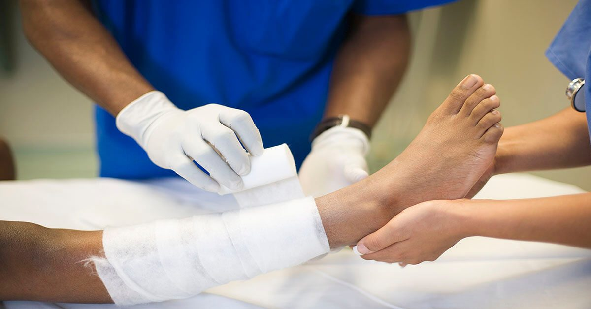
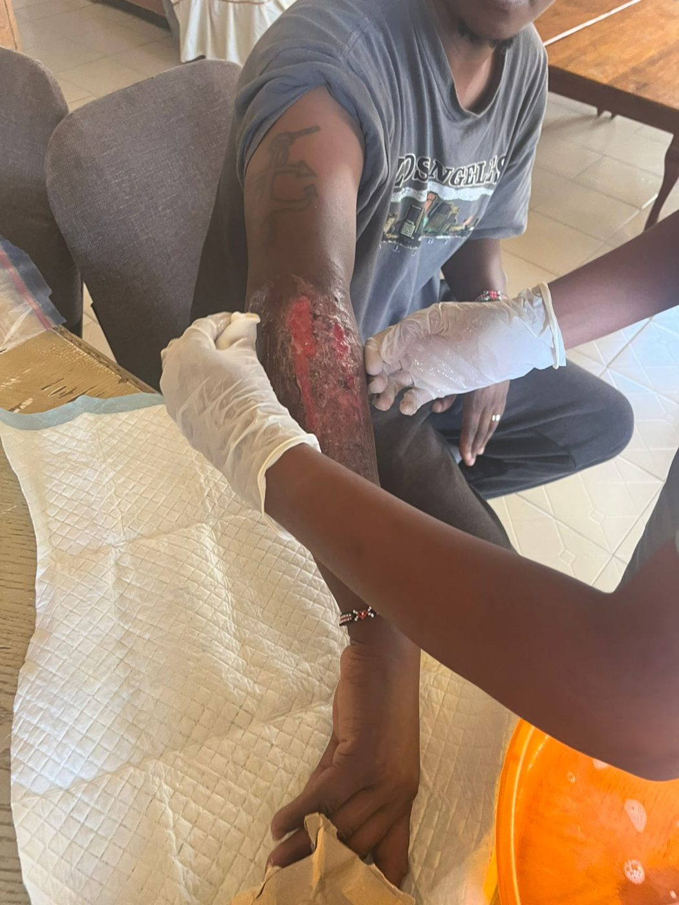
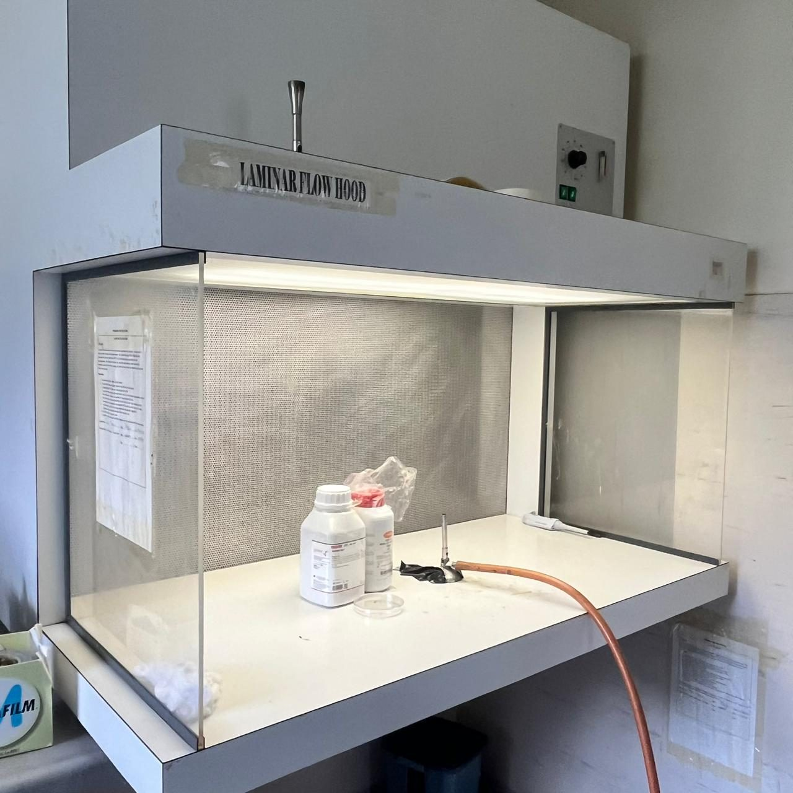
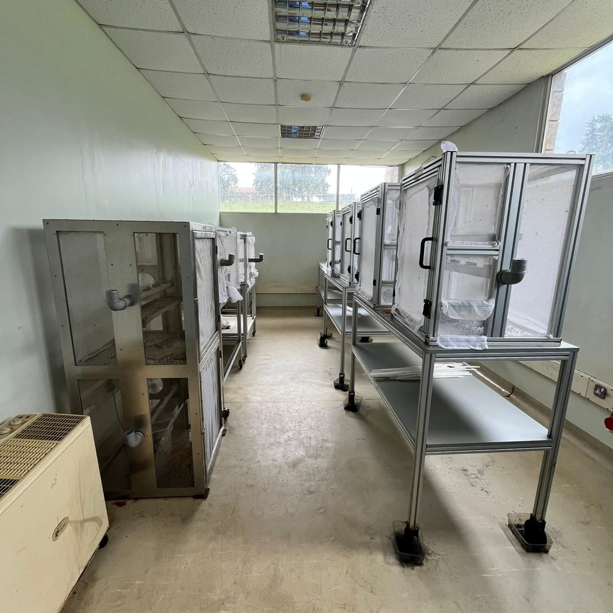

Gentle wound cleaning with medical larvae
Sterile Lucilia sericata larvae remove dead tissue, reduce bacteria and prepare stubborn wounds for healing.
Healing starts with a clean wound
Chronic wounds struggle to heal while dead tissue and bacteria remain. Larval therapy tackles both, and it has been used in hospitals for decades.
How it works
Larvae liquefy and consume dead tissue while releasing secretions that limit bacteria and support new tissue growth.
What we treat
Diabetic foot ulcers, venous leg ulcers, pressure ulcers and stubborn traumatic or post-surgical wounds.
Safety and quality
Disinfected eggs, sterile rearing, single-use containers and a cage dressing keep every treatment controlled.
Precise debridement, without the scalpel
Debridement, the removal of dead tissue, is one of the most important steps in treating a chronic wound. Medical larvae do it selectively: they feed on dead tissue and leave healthy tissue alone.
Clinical reviews describe larval therapy as especially useful when conventional treatment has failed or is not suitable.
- Removes dead tissue and slough from the wound bed
- Reduces bacteria and biofilm, including some drug-resistant strains
- Can prepare a wound for closure or grafting


Treatment at a glance
A typical course, as described in clinical guidance. The treating clinician sets the plan for each patient.
Raised in controlled conditions
Medical larvae are grown from disinfected eggs in sterile conditions. Laminar-flow handling, temperature control and careful gowning protect each batch before it reaches a patient.


Ready to order, or have a question?
Message us on WhatsApp at +254 793 935665. We reply with availability and next steps.